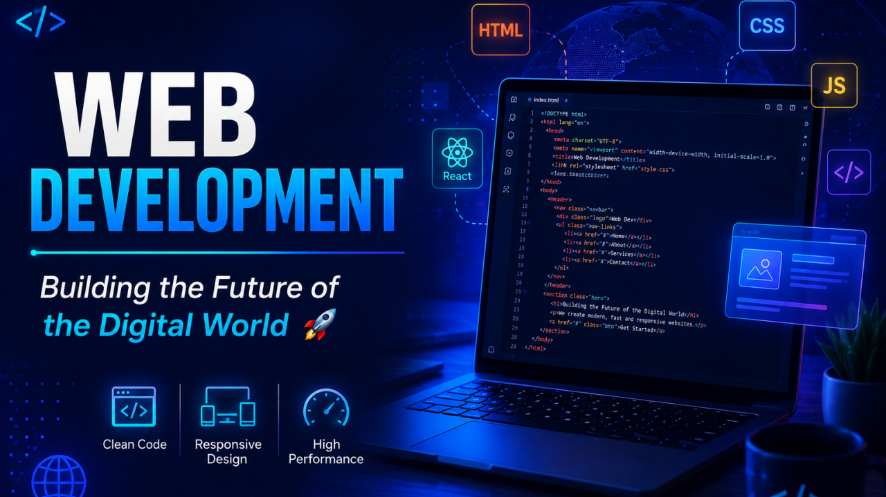

Bonjour, je suis
Développeur web en formation, passionné par la création d’interfaces et d’applications utiles, modernes et fonctionnelles.

Développeur web en début de parcours professionnel, j’ai complété une formation pratique en Développement Web et en Gestion de Projets chez FHC Groupe Sarl. Je développe principalement des interfaces et applications web avec HTML5, CSS3, JavaScript, PHP et MySQL, tout en renforçant mes compétences à travers des projets pratiques et des parcours complémentaires. J’accorde une attention particulière à la qualité du code, à la structure des interfaces, à l’accessibilité et à la résolution de problèmes. Ma formation en gestion de projets me permet d’aborder les réalisations numériques avec une approche structurée, de la définition du besoin à la planification et au suivi du projet.
Ricardo Dovonou
Bénin
Application web avec authentification, contrôle d’accès par rôles, gestion des produits, du stock et des commandes.
Application de gestion de tâches avec ajout et suppression dynamique, validation, prévention des doublons, délégation d’événements et animations CSS.
Intégration autonome d’un site vitrine multipage à partir d’un brief et de maquettes, avec navigation responsive, menu hamburger et formulaire de contact.
Version web interactive de mon CV, développée dans le cadre de ma formation chez FHC Groupe Sarl, avec structure sémantique, design responsive et animations CSS.
Projet web complexe présenté à la fin de ma formation pratique chez FHC Groupe Sarl. Amélioration en cours avant les tests auprès d’utilisateurs cibles.
Formation pratique terminée en développement web : HTML5, CSS3, JavaScript, PHP, MySQL et réalisation de projets concrets.
Formation pratique terminée couvrant le cadrage, le WBS, la planification, les ressources, le budget et les risques.
Parcours consacré à HTML5, CSS3, Flexbox, au responsive design, à l’accessibilité et à des projets pratiques.
Certificats obtenus en programmation, HTML, CSS, JavaScript, jQuery, Git et GitHub.
Diplôme de technicien en Installation et Maintenance Informatique.
Bénin